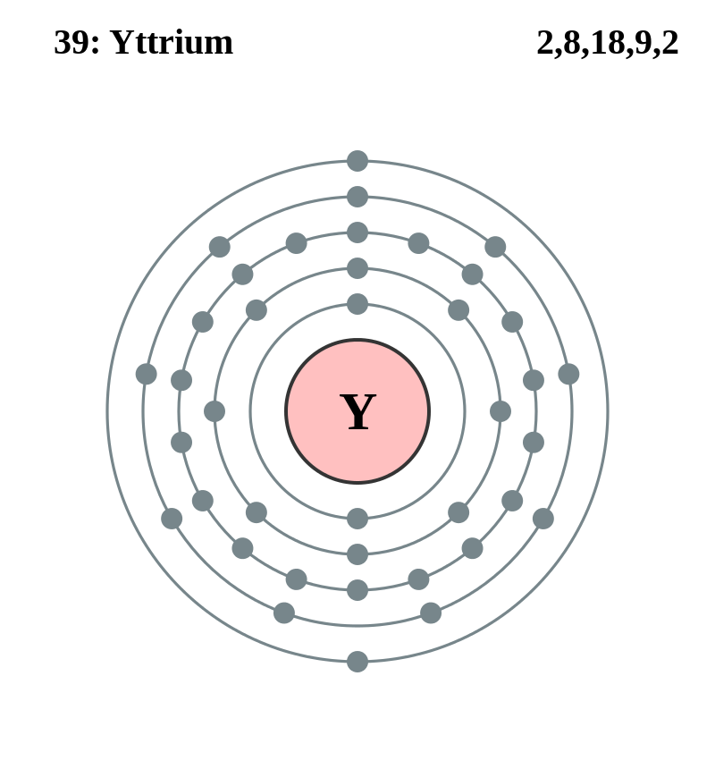

Basic Information about the element
Basic Information about the element
Name: Yttrium
Symbol: Y
Atomic Number: 39

1s2 2s2 2p6 3s2 3p6 3d10 4s2 4p6 4d1 5s2
The chemical element yttrium is classed as an transition metal.
It was discovered in 1794 by Johann Gadolin.
| Number of Protons/Electrons: | 39 |
| Number of Neutrons: | 50 |
| Atomic Mass: | 88.90585 amu |
| Melting Point: | 1523.0 °C |
| Boiling Point: | 3337.0 °C |
| Classification: | Transition Metal |
| Uses: | Yttrium is used in color television's and radars. |